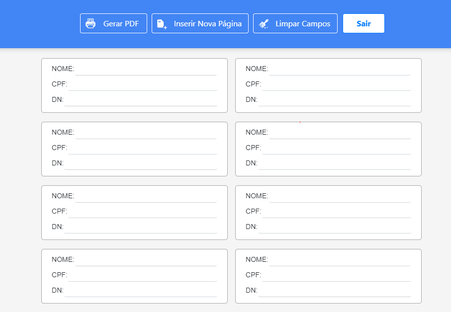
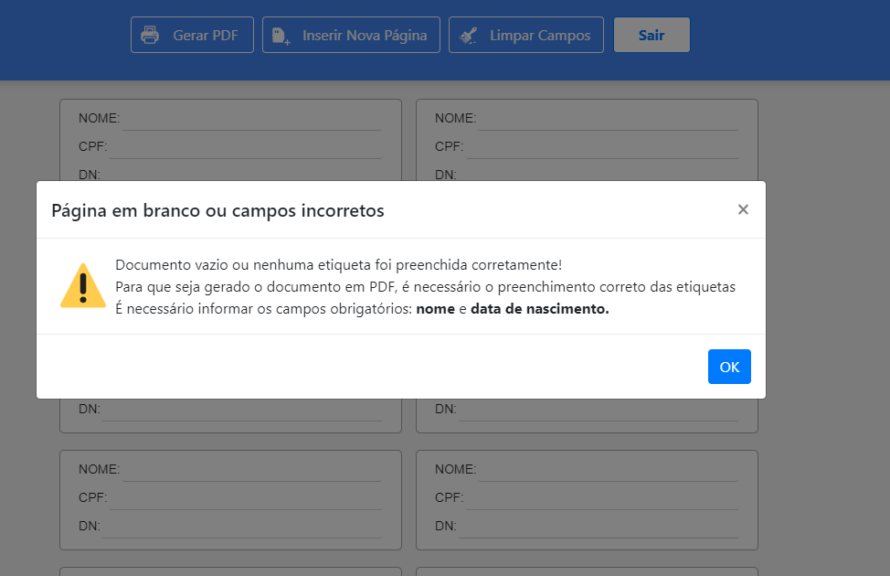
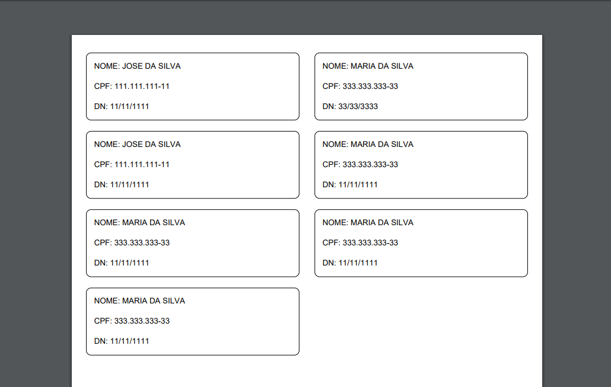
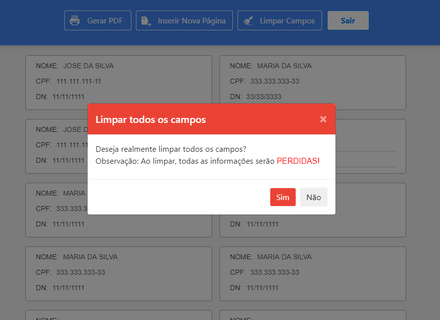
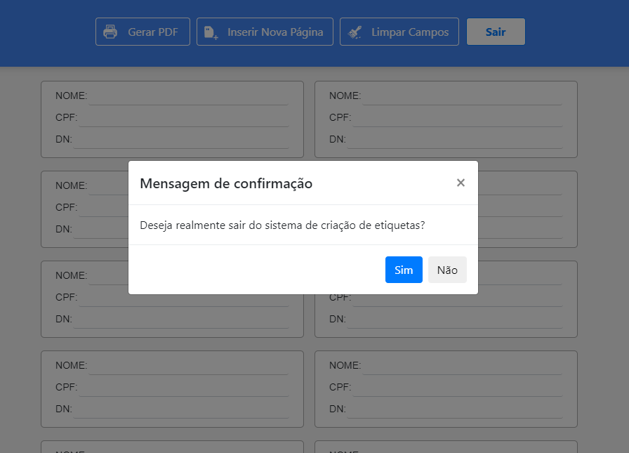

Criador de páginas
Página inicial com opções de gerar PDF, adicionar novas páginas para que sejam criadas mais etiquetas, limpar todas as etiquetas e sair do sistema.


Sistema inteligente de identificação de campos em branco
Caso o usuário tente gerar um arquivo em PDF com os dados em branco, ou seja, sem ter preenchido nenhuma etiqueta, o sistema irá emitir uma mensagem, que a página está em branco ou que os campos estão incorretos.
Gerador de etiquetas em PDF
O Sistema possui um gerador automático que gera etiquetas em PDF de uma forma simples e rápida, pdf é um formato de arquivo amplamente utilizado no mundo inteiro e sendo o padrão utilizado por mais de 90% das empresas nacionais e estrangeiras.

Ferramenta de limpar campos
O sistema possui a opção de limpar todos os campos, caso o usuário tenha digitado incorretamente as etiquetas, com isso o usuário poupará tempo, ao invés de ir apagando cada etiqueta individualmente, com essa opção o usuário pode apagar todas as etiquetas em menos de 1 segundo.


Sair do sistema
Caso o usuário já tenha terminado de digitar as etiquetas e ter impresso as mesmas, o usuário pode sair do sistema sem problemas. No entanto, caso o usuário tenha clicado sem querer em fechar o navegador, o sistema vai exibir a mensagem, perguntando ao usuário se realmente ele deseja realmente sair do sistema de criação de etiquetas. Com isso, o usuário tem essa proteção extra, em caso de ter clicado sem querer na opção de fechar o navegador, assim não haverá a perca das etiquetas que já foram digitadas e não foram impressas.
Tecnologias utilizadas
Para o desenvimento deste site foram utilizadas as seguintes tecnologias: HTML5, CSS3, javascript utilizando recursos do Ecma Script 2015. Não houve a necessidade de se utilizar uma linguagem de programa do lado do servidor, como node.js, php, java, ruby e etc.
HTML5
CSS3
JS